सुविकल्प: Mine Repurposing Tool
Select factors and sub-factors to discover suitable repurposing options for your mining site
![Coal Controller Organisation emblem]()
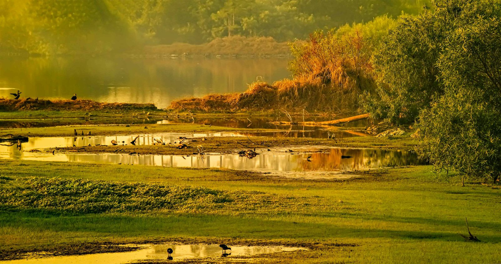
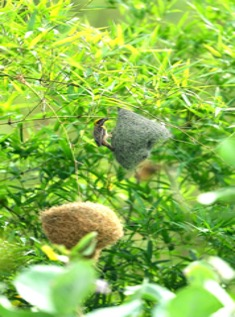
Project concept, strategic rationale, site suitability assessment and indicative scales for wetland restoration on closed coal mine land.
This concept proposes the development of Wetlands Restoration / Constructed Wetland and Mine Waterbody Ecological Landscapes on closed, reclaimed, or repurposed coal mine land as part of a sustainable mine-closure and post-mining land-use strategy.
The objective is to convert under-utilised mine land, mine voids, pit lakes, low-lying reclaimed areas, overburden drainage zones and mine water discharge areas into ecologically functional wetland landscapes centred around:
Unlike conventional built infrastructure, wetlands restoration can use existing mine voids, depressions, drainage lines, pit lakes and reclaimed lowlands; is compatible with eco-parks, biodiversity parks, walking trails, bird hides, interpretation centres and mine-water treatment systems; and allows phased investment depending on landform, water quality, safety and hydrological conditions.
Wetlands restoration is particularly suited for closed coal mine areas because many mine-closure landscapes already contain water-filled voids, pit lakes, seasonal drainage channels, low-lying reclaimed areas, sedimentation ponds and mine water discharge points. Wetlands provide multiple ecosystem services:
The Nature Conservancy India's Sembakkam Lake restoration (100 acres, Tamil Nadu) and Wular Lake restoration (Jammu & Kashmir) are strong Indian precedents for scientific, economic and participatory wetland restoration approaches.
The following matrix provides a structured checklist for assessing the suitability of the proposed site for the selected repurposing option. It identifies the key physical, technical, environmental, infrastructure, legal, and owner-side readiness parameters that should be reviewed before the project is advanced to the next stage of development. The purpose of this matrix is to help the project owner understand existing site conditions, technical requirements, potential constraints, and preparatory actions required before feasibility studies, approvals, or tendering are initiated.
| Category | What to Assess / Prepare | Why It Matters | Owner-Side Readiness |
|---|---|---|---|
| Land status | Closure status, permissible post-mining land use, land ownership, encumbrances and waterbody ownership | Legal viability for wetland restoration and public access | Closure note |
| Landform stability | Slope stability, dump stability, subsidence risk, erosion-prone zones, pit edge stability | Visitor safety, embankment stability and wetland longevity | Geotechnical screening |
| Hydrology | Catchment area, runoff inflow, seasonal water level, mine water inflow, overflow route, retention time | Determines wetland type, size, water balance and sustainability | Hydrology note |
| Mine void / pit lake condition | Depth, side slopes, water level fluctuation, access, unsafe edges and bathymetry | Determines suitability for deep-water wetland, buffer wetland or restricted conservation zone | Pit lake safety note |
| Soil and sediment condition | Soil depth, pH, texture, compaction, organic carbon, sediment load, heavy metals, acidity, salinity | Determines planting, substrate design, contamination risk and habitat suitability | Soil and sediment report |
| Water quality | pH, EC, DO, BOD, COD, TSS, turbidity, metals, sulphate, oil and grease, coliform where public interface exists | Determines whether wetland is suitable for biodiversity, treatment, restricted use or public recreation | Water quality report |
| AMD risk | Acidity, iron, manganese, sulphate, metal load, seasonal variation and alkalinity | Important for passive treatment wetland design and safety | AMD screening |
| Contamination risk | Screening for heavy metals, hydrocarbon residues, mine drainage influence, ash, unsafe sludge and legacy waste | Public safety and suitability for wetland vegetation, fishery or eco-tourism | Environmental screening |
| Water availability | Mine water, stormwater, treated wastewater, rainfall, groundwater seepage, ponds and pit lakes | Essential for maintaining wetland hydroperiod and vegetation survival | Water plan |
| Vegetation | Existing aquatic plants, riparian vegetation, invasive species, grass cover and nearby native flora | Forms basis for wetland zoning and restoration | Vegetation inventory |
| Biodiversity potential | Birds, fish, amphibians, reptiles, butterflies, pollinators and wetland-dependent species | Supports ecological and educational value | Biodiversity baseline |
| Invasive species risk | Water hyacinth, salvinia, prosopis, lantana, invasive fish and aggressive grasses | Prevents wetland degradation and O&M burden | Invasive species plan |
| Access | Roads, parking, pedestrian movement, emergency access and maintenance routes | Visitor management, monitoring and maintenance logistics | Access plan |
| Safety | Deep water, soft sediments, unstable slopes, sudden water-level changes, wildlife interaction and restricted zones | Public safety and controlled access | Safety zoning plan |
| Community proximity | Nearby villages, SHGs, land-losers, youth, women groups, schools and fishery groups | Livelihood and education integration | Beneficiary mapping |
| Institutional linkages | Wetland Authority, forest department, fisheries department, irrigation department, KVKs, universities, NGOs | Technical credibility and long-term wetland management support | Partnership note |
| Visitor potential | Nearby towns, schools, eco-tourism circuits, birdwatching potential and transport access | Determines scale, revenue and facility planning | Demand assessment |
The following matrix presents an indicative relationship between available site area, project scale, technical configuration, and likely development potential. It is intended to support preliminary planning by helping the project owner identify the appropriate scale and configuration for the proposed repurposing option. The values and recommendations are indicative and should be refined through detailed feasibility studies, site surveys, engineering assessments, and relevant technical and commercial evaluations.
| Land Area | Recommended Scale | Configuration | Use Case |
|---|---|---|---|
| 1–5 ha | Pilot wetland restoration / demonstration wetland | Small constructed wetland cell, sediment pond, native wetland planting, boardwalk or viewing deck, interpretation boards | Proof of concept |
| 5–20 ha | Community wetland restoration landscape | Marsh zones, shallow-water wetland, riparian planting, bird habitat, wetland nursery, walking trail, small interpretation facility | Community education and local livelihood |
| 20–50 ha | Integrated wetland and biodiversity park | Multiple wetland cells, sedimentation basin, open water, marsh, riparian buffer, bird hides, eco-trails, monitoring station, nursery | Cluster-level ecological and water-management asset |
| 50–100 ha | Large mine wetland restoration and eco-education park | Pit lake buffer wetland, constructed treatment wetland, biodiversity zones, visitor centre, training centre, boardwalks, eco-tourism facilities | PPP / CSR / institutional model |
| 100 ha+ | Regional wetland conservation landscape | Multi-zone wetland complex, pit lake system, flood-buffer zones, biodiversity conservation areas, research plots, community enterprise zones | Just-transition flagship |
Implementation models available for wetlands restoration and comparative assessment of suitability across ecological, livelihood, water-management and commercial dimensions.
The following table outlines the possible implementation models that may be considered for developing the proposed repurposing project. These models differ in terms of ownership structure, funding responsibility, private sector participation, operational control, and long-term risk allocation. The purpose of this table is to help the project owner compare broad development routes and select an implementation approach that aligns with its financial capacity, institutional preference, risk appetite, and long-term asset management objectives.
| Model | Suitability | Comment |
|---|---|---|
| EPC | Moderate | Suitable for basic wetland earthworks, bunds, inlets, outlets, silt traps, fencing, paths, planting and monitoring infrastructure |
| EPC + O&M / Facility Mgmt | High | Strong for owner-controlled wetland restoration with assured maintenance, water-level management and community livelihood support |
| BOOT | Moderate | Suitable where private developer builds visitor facilities, interpretation areas and eco-tourism components with asset transfer |
| BOO | Low to Moderate | Suitable only for commercially oriented eco-tourism or waterbody recreation; less suitable for sensitive wetland conservation unless safeguards are strong |
| DBFOT | High | Suitable for large wetland restoration projects with constructed wetlands, visitor facilities, interpretation centres and eco-tourism |
| Concession / Lease-Develop-Operate | Very High | Strong for wetland operation with community livelihood obligations, eco-tourism, maintenance and revenue sharing |
| Hybrid | Very High | Most flexible and balanced for ecological restoration, water management, public education, livelihood and revenue objectives |
The following comparative assessment evaluates the major implementation models across key decision parameters such as investment requirement, ownership control, financing responsibility, contractual complexity, risk transfer, and long-term economic benefit. This matrix is intended to support early-stage decision-making by highlighting the relative strengths and limitations of each model. The final choice of model should be guided by the specific circumstances of the project, including its scale, commercial viability, applicable policy framework, and the owner's institutional preference.
| Evaluation Parameter | EPC | EPC+O&M | BOOT | BOO | DBFOT | Concession | Hybrid |
|---|---|---|---|---|---|---|---|
| Upfront investment by Mine Owner | High | High to Moderate | Low to Moderate | Low | Low to Moderate | Low to Moderate | Variable |
| Need for private financing | Low | Low | High | High | High | Moderate to High | Variable |
| Ownership retained by Mine Owner | Yes | Yes | Land retained; assets may be developer-held during concession | Limited | Usually land retained | Land retained | Usually retained |
| Suitability for welfare objective | High | Very High | High if mandated | Moderate | High | Very High | Very High |
| Suitability for local livelihood | Moderate | Very High | Moderate to High | Moderate | High | Very High | Very High |
| Suitability for ecological restoration | Moderate | High | High if regulated | Moderate | High | High | Very High |
| Suitability for water-quality improvement | Moderate | High | Moderate | Low to Moderate | High | High | Very High |
| Suitability for SHG / FPO integration | Moderate | High | Moderate | Low to Moderate | High if required | Very High | Core feature |
| Revenue potential | Low to Moderate | Moderate | Moderate to High | High | High | Moderate to High | Variable to High |
| O&M burden on owner | High | Moderate | Low | Low | Low | Low to Moderate | Shared |
| Suitability for sensitive mine land | High if owner controls access | High | Moderate if regulated | Low to Moderate | High with safeguards | High with monitoring | Very High |
| Suitability for phased development | Moderate | High | Moderate | Moderate | High | Very High | Very High |
| Overall suitability for Wetlands Restoration | Moderate | High | Moderate | Low to Moderate | High | Very High | Very High / Most Suitable |
The following table explains how major project responsibilities are typically allocated under different implementation models. It covers key functional areas such as site availability, financing, design and construction, regulatory approvals, operation and maintenance, revenue collection, asset ownership, and end-of-term transfer. This helps clarify the respective roles of the project owner, private developer, EPC contractor, operator, or concessionaire, and supports the preparation of tender documents and contractual structures.
| Responsibility Area | EPC | EPC + O&M / FM | BOOT | DBFOT | Concession / Lease-Operate-Develop | Hybrid |
|---|---|---|---|---|---|---|
| Site / Land Availability | Owner | Owner | Owner / authority | Owner / authority | Owner | Variable |
| Financing (CAPEX) | Owner (often grant-funded) | Owner | Developer / NGO | Developer / NGO | Concessionaire / NGO | Shared / grant + private |
| Ecological Baseline & Hydrological Assessment | Owner / consultant | Owner / consultant | Developer / ecologist | Developer / ecologist | Concessionaire / specialist | Shared / specialist |
| Wetland Design & Engineering | EPC contractor / ecologist | EPC contractor | Developer / EPC | Developer / EPC | Concessionaire / contractor | Variable |
| Species Selection & Planting | Owner / ecologist | O&M agency / ecologist | Developer / ecologist | Developer | Concessionaire / ecologist | Community + ecologist + NGO |
| Water Control & Management Structures | EPC contractor | EPC + FM agency | Developer | Developer | Concessionaire | Shared |
| Community Engagement & Stakeholder Coordination | Owner | Owner + FM agency | Owner + developer (if mandated) | Owner + developer | Concessionaire + NGO | Core responsibility shared across all parties |
| O&M (Monitoring, Maintenance, Invasives Control) | Owner or separate agency | FM / O&M contractor | Developer | Developer | Concessionaire | Community + specialist agency |
| Grant & Carbon Credit Management | Owner | Owner | Developer / owner jointly | Developer / owner jointly | Shared per concession terms | Shared as agreed |
| Asset / Ecological Ownership | Owner | Owner | Developer during concession; owner thereafter | Developer during concession; owner thereafter | Owner (land); concessionaire (management) | Variable |
| Transfer / Continuation at End of Term | No formal transfer | No formal transfer | Yes — site and documentation to owner | Yes — to owner | Yes — site to owner | Variable |
In owner-led models such as EPC and EPC + O&M, the project owner retains primary responsibility for financing and ownership, while technical functions are outsourced. In developer-led models such as BOOT, BOO, DBFOT, and Concession, financing, construction, operation, and revenue realisation are largely undertaken by the private developer or concessionaire. Hybrid structures allocate responsibilities according to the negotiated project arrangement.
Funding logic, revenue streams, local livelihood outcomes and financial/social value comparison across implementation models for wetlands restoration.
The following table presents the broad funding logic for each implementation model. It explains who is expected to finance the project, the level of owner-side funding requirement, and the commercial rationale behind each structure. This section is intended to help the project owner assess whether the project is more suitable for owner-funded development, private investment, public-private partnership, lease or concession structure, or a hybrid funding arrangement.
| Model | Funding Source | Owner Funding Requirement | Suitability for Wetlands Restoration |
|---|---|---|---|
| EPC | Mine owner budget / mine closure fund / CSR | High | Suitable for basic wetland earthworks, bunds, pathways, hydraulic structures, planting, fencing and interpretation boards |
| EPC + O&M / FM | Mine owner budget + O&M budget + CSR | High to Moderate | Strong fit where owner wants control over water quality, public access, wetland health, monitoring, maintenance and SHG participation |
| BOOT | Private developer capital + possible CSR / VGF / grant support | Low to Moderate | Suitable for wetland with visitor centre, bird hides, trails, eco-tourism facilities and eventual asset transfer |
| BOO | Private developer capital | Low | Suitable only for commercially driven wetland recreation or eco-tourism; less preferred where conservation and public control are important |
| DBFOT | Private concessionaire + public / CSR support + possible VGF | Low to Moderate | Suitable for large wetland restoration parks with treatment wetlands, interpretation centres, eco-tourism and visitor facilities |
| Concession / Lease-Develop-Operate | Private operator / FPO / SHG federation / NGO / CSR / blended finance | Low to Moderate | Very suitable for community-linked wetland restoration with livelihood obligations, visitor revenue, maintenance and revenue sharing |
| Hybrid | Mine owner + CSR + government schemes + private operator + SHG/FPO + NGO + grants | Variable | Most suitable for balancing water management, ecological restoration, public education, livelihood generation and owner revenue participation |
The following table explains how revenue may be generated under different implementation models and identifies who is likely to receive the principal project income. It also describes the nature and extent of the financial benefit available to the project owner, whether through direct project revenue, cost savings, lease income, concession fees, revenue sharing, service charges, or eventual asset transfer. This comparison is intended to support the selection of a commercially appropriate model for the proposed repurposing project.
| Model | How Revenue is Generated | Who Receives Revenue | Owner's Financial Benefit |
|---|---|---|---|
| EPC | Entry tickets, guided wetland trails, birdwatching, interpretation centre income, wetland nursery plant sales, training fees, exhibitions, events and eco-tourism visits | Mine Owner | Full revenue retained by owner, but owner bears full CAPEX, O&M, wetland maintenance, visitor safety and ecological monitoring risk |
| EPC + O&M / FM | Same revenue streams: tickets, guided trails, training, birdwatching, eco-tourism, exhibitions, school programmes, wetland nursery sales and events | Mine Owner after paying O&M agency | High benefit; owner retains revenue while outsourcing operations and technical management |
| BOOT | Developer earns from ticketing, visitor facilities, eco-tourism, bird hides, guided tours, training, interpretation facilities and events during concession | Developer / concessionaire during concession | Lease rent, concession fee, revenue share, local economic uplift and asset transfer at end of concession |
| DBFOT | Structured revenue from ticketing, interpretation centre, eco-tourism, events, training programmes, visitor amenities and CSR-supported education | Concessionaire during concession | Concession fee, lease rent, revenue share, performance-linked payments and asset transfer at end |
| Concession / Lease-Operate-Develop | Revenue from wetland operations, SHG/FPO-based visitor services, guided tours, birdwatching, training, eco-tourism and events | Concessionaire / operator as per agreement | Lease rentals, revenue share, improved land value, ESG gains and indirect socio-economic benefits |
| Hybrid | Mixed revenue streams: tickets, guided trails, SHG/FPO enterprises, CSR/grants, eco-tourism, training, events, exhibitions, interpretation centre and wetland nursery products | Shared between owner, operator, SHG/FPO, NGO as structured | Variable to high; owner benefits through revenue share, reduced O&M burden, ESG gains and enhanced land value |
The following table assesses the likely local livelihood and employment potential of each implementation model. It considers the extent to which each model can support construction-phase jobs, long-term operational employment, local procurement opportunities, skill development, community participation, and associated support services. This section is particularly relevant where the repurposing project is expected to contribute to post-mining or post-operational economic transition and sustained local community benefit.
| Model | Local Job Potential | Why | Overall Suggestibility for Local Livelihood |
|---|---|---|---|
| EPC | Moderate | Creates short-term jobs in earthwork, bund construction, fencing, pathway construction, planting and wetland infrastructure setup. Long-term jobs depend on owner-led operations after completion. | Moderate |
| EPC + O&M / FM | High to Very High | Supports sustained employment in wetland maintenance, vegetation management, water-level control, nursery operations, visitor management, guides, ticketing, security, monitoring and SHG facilitation. | Very High |
| BOOT | Moderate to High | Generates jobs during development and operation. Local employment strong if agreement mandates local hiring, SHG/FPO wetland nursery participation, training and local procurement. | High |
| BOO | Moderate | Can create wetland maintenance, visitor facility and eco-tourism jobs, but local livelihood depends mainly on private developer policy unless contractually mandated. | Moderate |
| DBFOT | High to Very High | Suitable for large wetland restoration landscapes with interpretation centres, eco-tourism, training centres, trails, bird hides and conservation facilities. | High to Very High |
| Concession / Lease-Operate-Develop | Very High | Strong model for long-term local livelihood through SHG/FPO participation, wetland nursery production, maintenance, visitor services, guided tours and market linkage. | Very High |
| Hybrid | Very High | Best suited for combining mine-owner support, private expertise, NGO facilitation, SHG/FPO participation, CSR support, conservation objectives and community benefit obligations. | Very High / Most Suitable |
The following combined comparison brings together three important dimensions of project structuring: revenue potential, owner-side financial benefit, and local livelihood generation. It provides a consolidated view of how each implementation model performs across commercial, institutional, and community-development perspectives. This matrix is intended to support balanced decision-making where the objective extends beyond financial return to include sustainable site reuse and long-term local economic benefit.
| Model | Owner Profitability | Local Job Creation | Overall Comment |
|---|---|---|---|
| EPC | High — owner retains full revenue after capital repayment | Moderate to High | Suitable where the owner has funding capacity and seeks full control over the asset |
| EPC + O&M / FM | High — full revenue retained after O&M / FM contract costs | High to Very High | Best for owners who want full control combined with professional facility management |
| BOOT | Moderate — income through lease, concession fee, or transfer value | High | Suitable where private financing is needed; owner benefits indirectly and gains the asset at end of concession |
| DBFOT | Moderate to High — through lease, concession fee, and transfer | High to Very High | Strong PPP structure for larger projects requiring private investment and structured public participation |
| Concession / Lease-Operate-Develop | Moderate — through concession fee and revenue-sharing arrangement | High to Very High | Highly suitable where the owner wants to retain land while outsourcing commercial activation |
| Hybrid | Variable to High — depends on structure and revenue-sharing terms | Very High | Most suitable where public value, community benefit, and commercial viability are all required |
Pre-RFP readiness requirements and post-award implementation activities for wetlands restoration on closed coal mine land.
The following section identifies the key owner-side preparatory actions that should ideally be completed before issuing the first Request for Proposal. These actions are aimed at reducing uncertainty for prospective bidders, improving project bankability, clarifying site availability, identifying approval pathways and risks, and defining the technical and commercial scope of the project. Completing these preparatory steps before tendering can improve bid quality, attract credible responses, and reduce the risk of delays during project implementation.
The following section lists the principal activities that may be undertaken by the selected contractor, developer, concessionaire, operator, or implementation agency after award of the project. These activities generally include detailed site investigations, engineering design, statutory submissions and approvals, equipment procurement, construction, commissioning, operational planning, staff training, and performance monitoring. The distinction between pre-RFP owner preparedness and post-award implementation responsibilities helps ensure an appropriate and efficient allocation of effort across the project development cycle.
The following implementation pathway presents a practical high-level sequence for advancing the proposed repurposing concept from initial approval through to project execution and long-term operation. It outlines the broad stages of concept approval, preliminary studies, model selection, bid preparation, procurement, detailed design, statutory approvals, construction, commissioning, and ongoing operation. This pathway is indicative and should be adapted to reflect the specific complexity, regulatory requirements, financing structure, and site conditions applicable to the project.
Recommended way forward, indicative implementation pathway, key references and glossary for wetlands restoration on closed coal mine land.
The following way forward summarizes the preferred development approach for the proposed repurposing option, based on the assessment presented in PRISM (Post Mining Repurposing Implementation and Strategy Models). It identifies the most suitable implementation models in order of preference, highlights key technical and due-diligence considerations, and outlines the recommended next steps and broad development logic. This section is intended to guide internal decision-making and support the project owner in progressing from concept-stage evaluation toward feasibility assessment, project structuring, regulatory approvals, and implementation planning.
Preferred Models (in order):
Secondary option: EPC, for basic earthworks, hydraulic structures, fencing, planting and initial restoration where the mine owner wants full control and can separately arrange long-term wetland maintenance.
Recommended Development Position: The Hybrid Model is the most suitable model because wetlands restoration requires long-term hydrological management, water-quality monitoring, scientific wetland design, ecological restoration and biodiversity management, public safety management, community participation, visitor services and interpretation, nursery and maintenance operations, invasive species control, phased capital investment, and institutional partnerships. Wetlands restoration is not only a beautification or revenue project — it is a mine-closure legacy asset that can combine water management, ecological restoration, biodiversity conservation, climate resilience, education, eco-tourism, local livelihood and ESG value.
| Abbreviation | Full Form |
|---|---|
| EPC | Engineering, Procurement and Construction |
| O&M | Operation and Maintenance |
| BOOT | Build, Own, Operate, Transfer |
| BOO | Build, Own, Operate |
| DBFOT | Design, Build, Finance, Operate, Transfer |
| PPP | Public-Private Partnership |
| CSR | Corporate Social Responsibility |
| RFP | Request for Proposal |
| DPR | Detailed Project Report |
| CAPEX | Capital Expenditure |
| ESG | Environmental, Social and Governance |
| SHG | Self-Help Group |
| FPO | Farmer Producer Organization |
| NGO | Non-Governmental Organization |
| VGF | Viability Gap Funding |
| CCO | Coal Controller Organisation |
| AMD | Acid Mine Drainage |
| EC | Electrical Conductivity |
| DO | Dissolved Oxygen |
| BOD | Biochemical Oxygen Demand |
| COD | Chemical Oxygen Demand |
| TSS | Total Suspended Solids |
| GIS | Geographic Information System |
| NPCA | National Plan for Conservation of Aquatic Ecosystems |
| MoEFCC | Ministry of Environment, Forest and Climate Change |
| GEF | Global Environment Facility |
| KVK | Krishi Vigyan Kendra |
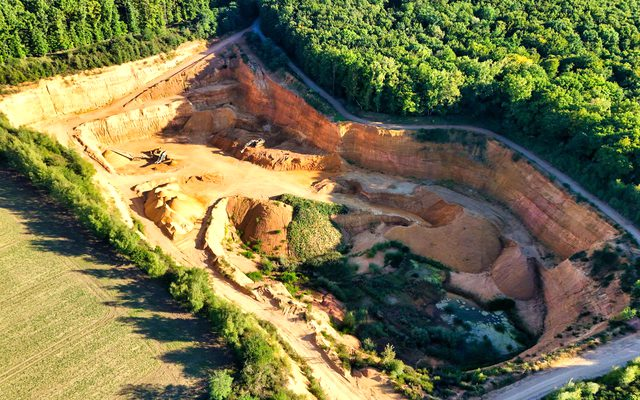
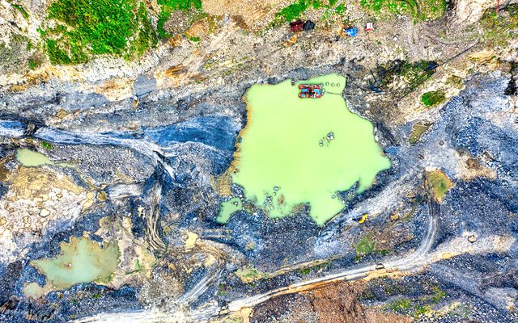
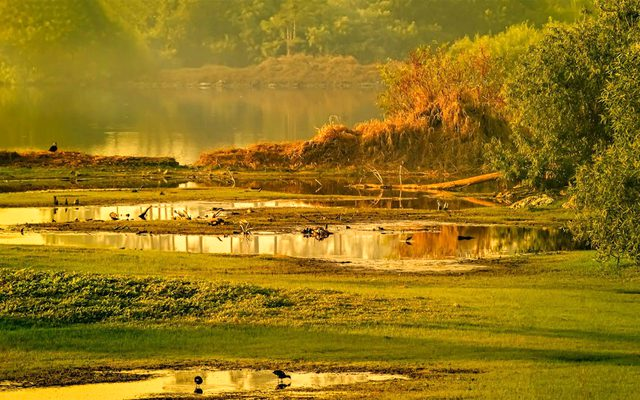
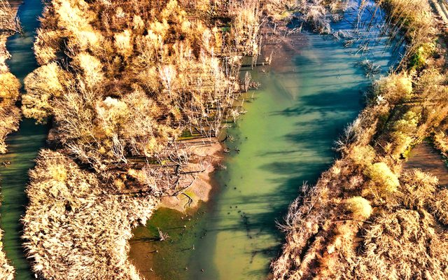
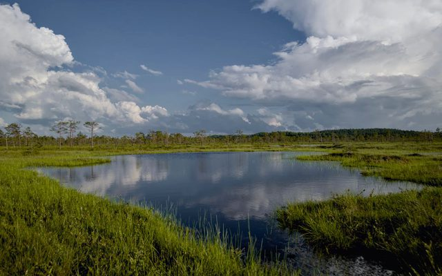
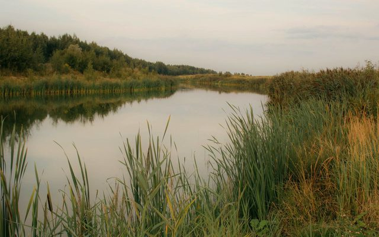
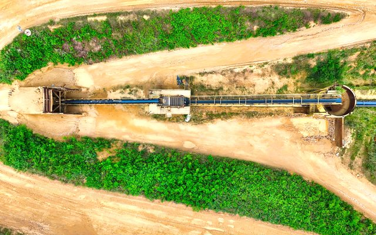
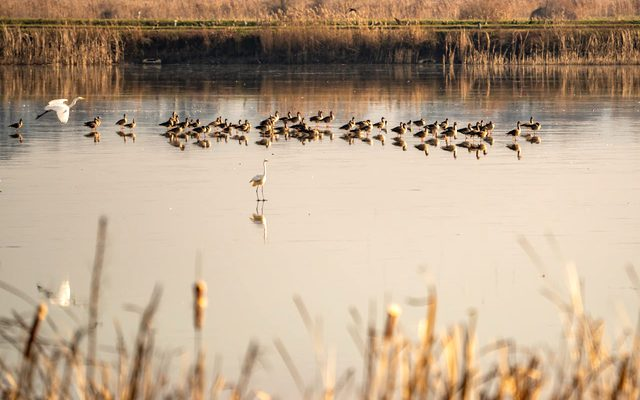
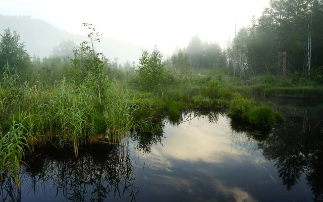
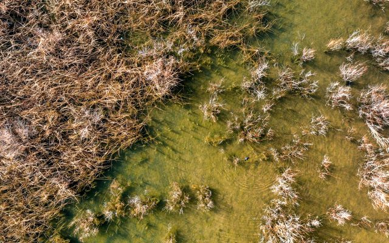
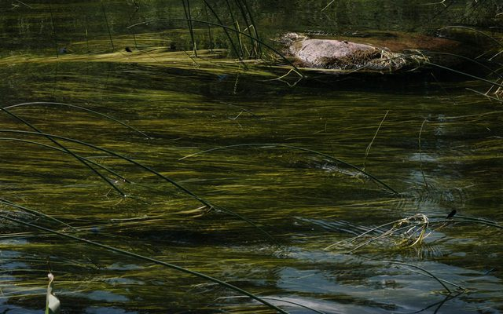
Links open external websites. Coal Controller Organisation does not endorse third-party content.


Disclaimer: Inclusion of an agency on this list does not constitute endorsement, empanelment, or recommendation by the Coal Controller Organisation or the Ministry of Coal, Government of India. Mine owners and project proponents are advised to conduct their own due diligence process before engaging any agency.
Disclaimer: Inclusion of an expert does not constitute endorsement, empanelment, or recommendation by the Coal Controller Organisation or the Ministry of Coal, Government of India. Users are advised to independently verify credentials and suitability before engaging any individual.